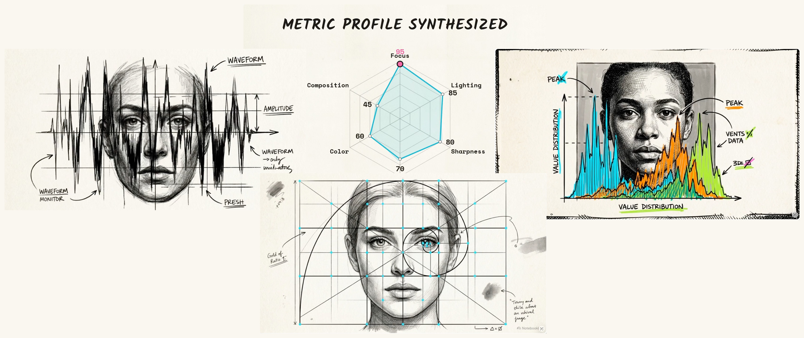
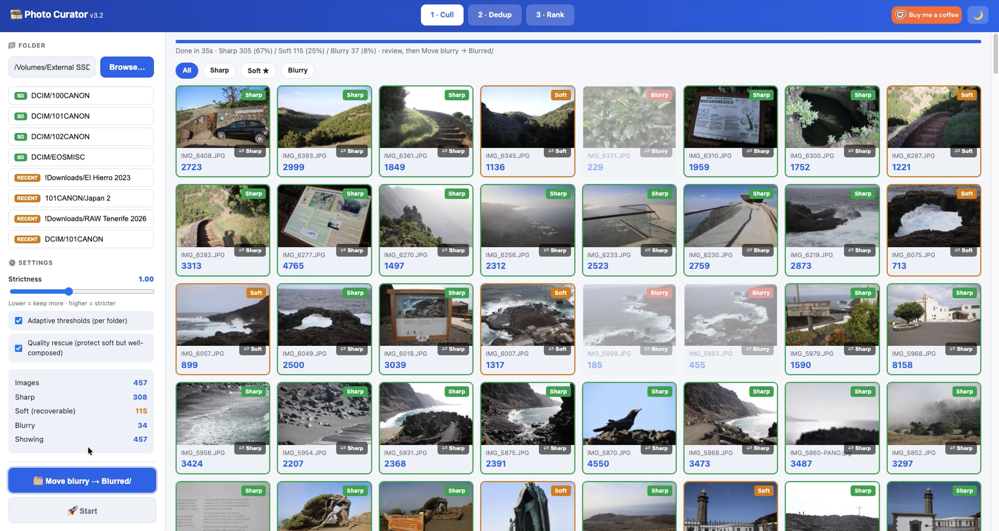
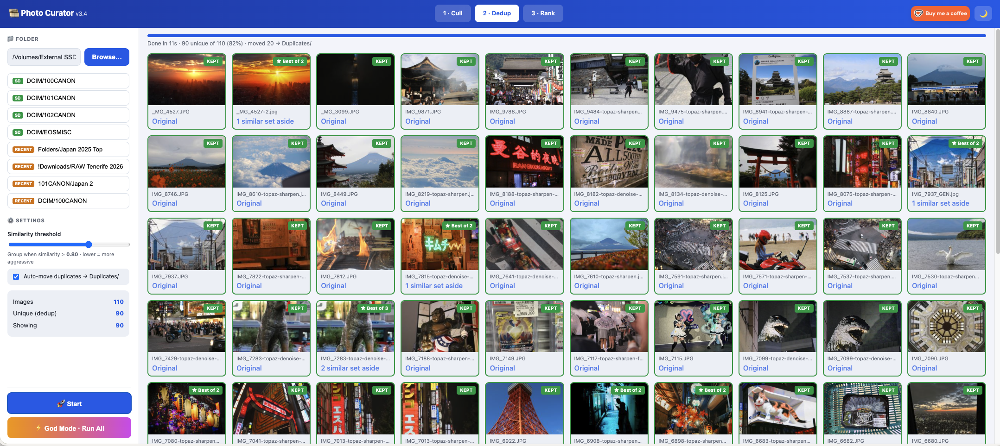
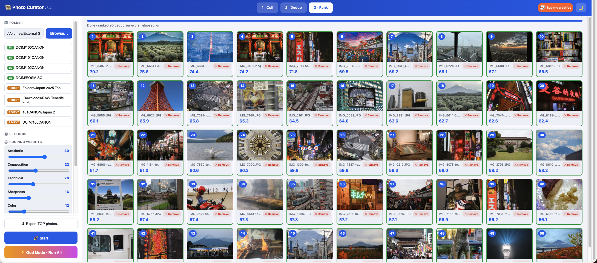
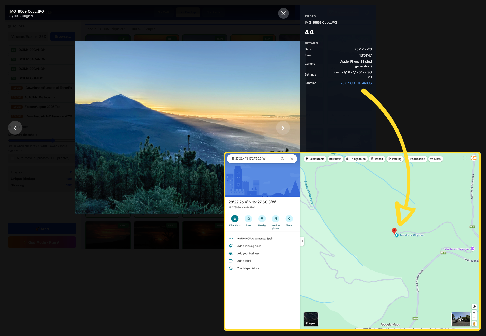
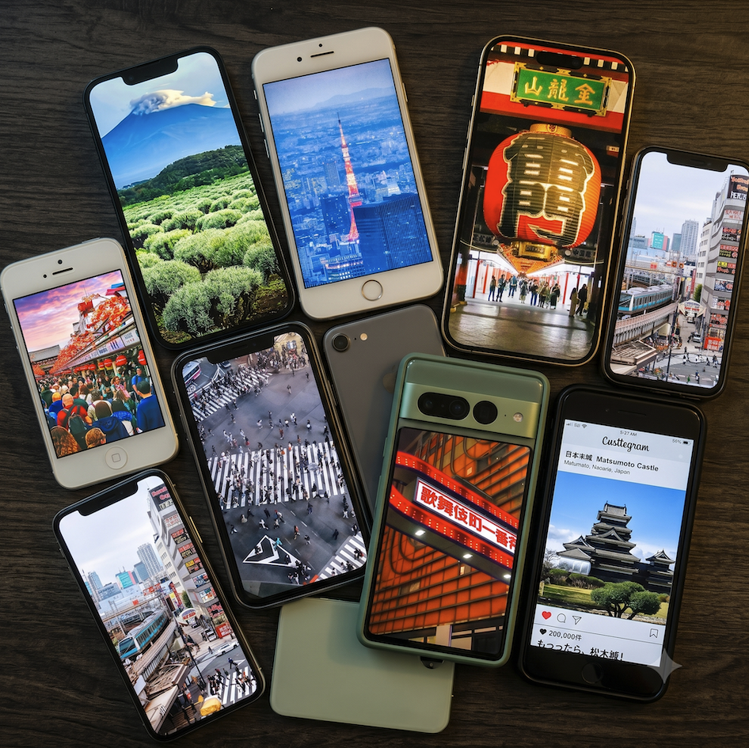

Point Photo Curator at a folder of shots and it does the ruthless first pass for you — drops the blurry frames, collapses burst duplicates, and surfaces your keepers. All on your own Mac.

Out-of-focus shots flagged by real, contrast-aware sharpness — haze and night skies aren't mistaken for blur.
Burst sequences collapse to one frame. The sharpest survivor is kept, labelled “Best of N.”
Each keeper scored on composition, lighting, focus, colour and contrast, then sorted to your TOP N.
Thousands of near-identical frames, blurred misfires, and a handful of genuine keepers buried in the middle. Going through them by hand is slow and easy to get wrong. Photo Curator does the first pass in seconds per hundred photos — and every decision stays reversible. Nothing is deleted or moved until you say so.
Sharpness is measured as var(Laplacian) / var(image) on a normalized copy — so it judges real focus, not contrast. Big skies, haze and night scenes are kept, not punished.

A 192-bit perceptual hash clusters near-duplicates globally; EXIF capture-time tightens bursts and ORB feature-matching stops distinct scenes from being wrongly merged.

Every keeper is scored across five dimensions and shown with a per-photo radar chart and a TOP-N average “metric profile.” Tune the weights to your taste; ranking shows live progress with elapsed time and ETA.


Open any photo to see camera, lens, exposure, ISO and capture time — plus an inline map pin for geotagged shots, so you remember exactly where that frame happened.

Tap to mark a top shot as a wallpaper. Export writes full-res originals plus a universal 1290×2796 (19.5:9) crop — pixel-perfect on iPhone and covering nearly all Android.
Press once and Photo Curator advances through Cull → Dedup → Rank automatically, landing on your ranked TOP N — without moving a single file. You still review and move rejects yourself.
Not a policy — a design. There's no cloud and nothing to sign into.
All analysis runs in Python on your machine. The only socket opened is a local server on 127.0.0.1 so your browser can reach it — unreachable from the network.
No cloud, no accounts, no telemetry, no third-party trackers. It collects nothing and phones home to nothing.
Nothing is deleted or moved without your say-so. Rejects relocate to Blurred/, Duplicates/ or TOP_N/ only when you press the button.
| Step | Metric | What it does |
|---|---|---|
| Cull | var(Laplacian) / var(image) on a 1024px copy | Resolution-independent sharpness that normalizes out contrast, so haze ≠ blur. Threshold adjustable. |
| Dedup | 192-bit perceptual hash (avg + dual dHash) + ORB confirm | Global clustering; EXIF-timed bursts get a relaxed bar; the sharpest frame of each group survives. |
| Rank | Weighted focus / lighting / contrast / colour / composition | Per-photo radar plus a TOP-N average profile. Weights are yours to tune. |
Built for Apple Silicon Macs. Everything it needs is bundled — no pip, no terminal commands, no internet at run time.
127.0.0.1:5014. Pick a folder, press Start.Runs on port 5014 — “50mm f/1.4” — because macOS reserves port 5000 for AirPlay.
====================================== 📸 Photo Curator v4.0 ====================================== Using Python: /usr/bin/python3 Starting the photo engine... o ___________ /|\ | _______ | ))) / \ | | - - |#| >>> | |_______| | ))) you |___[===]___| P H O T O C U R A T O R *CLICK* ✦ flash! ✦ 📸 Got it! Opening your browser... http://127.0.0.1:5014